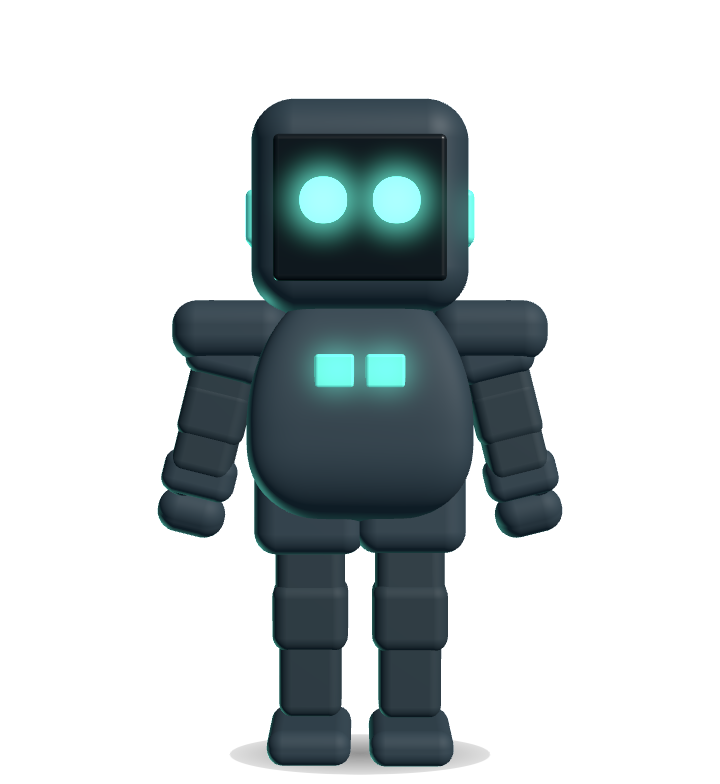
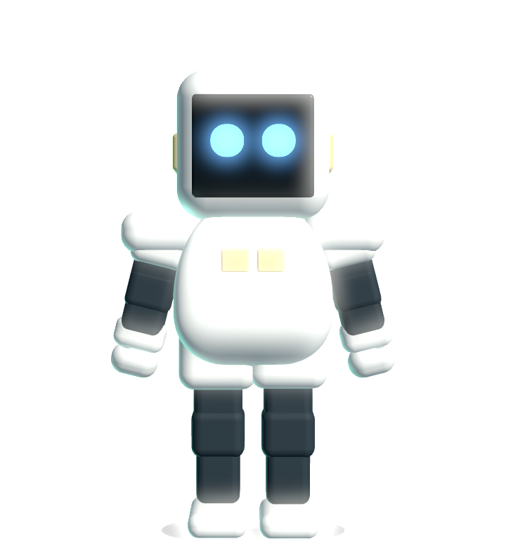
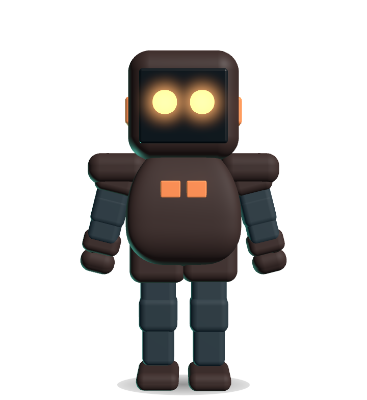

You are reading Slack. An agent in another window wants to run
git push --force origin main. A small robot on your desktop
turns to you and holds the command up; you answer it there. No terminal,
no lost focus.

The face is the point. Sixteen expressions driven by what is actually happening, interpolated rather than switched, on a body whose every joint runs through a spring so nothing ever snaps into place.
Approve, Deny, Allow for this session, Always allow, or jump to the pane it came from. Through a hook, so nothing is typed anywhere and nothing races your shell.
It goes wary at an rm -rf, a force push, a dropped
table, a destroy against production. A reading aid, never a control:
it changes how the pet looks, never what is allowed.
Headphones go on, a five band meter runs on its chest, and it nods on the beat. Start a dance and the routine runs at the tempo of the track. Nothing is recorded: five numbers reach the pet.
A lamp on its chest, orange for the microphone and green for the camera, in the colours macOS uses for its own dots. Public frameworks only, and it excludes itself.
Eye breaks, posture, a stretch, a glass of water, and a word when it gets late. One thing at a time, never while something is waiting on you, and off until you ask for it.
Six characters, each with their own shell, accent and eye colour. Same creature, different company.


Everything that interrupts you is off by default. Everything that watches anything asks first, or does not need to.
Squawk registers a PreToolUse hook with Claude Code or Codex.
When an agent is about to use a tool, the hook hands the pending call to
the dial over a Unix socket and waits. You answer, and the hook returns
the decision.
Answer once and stop being asked for the same shape of call, for this session or for good. Always names exactly what it will wave through and confirms, and every remembered answer is listed and revocable.
App closed, socket gone, payload malformed, or you simply ignore it: the hook exits silently and you get your normal terminal prompt. It also stays out of modes that would not have asked you at all.
The dial truncates to fit, so pointing at it shows the full command beside it. Approving something you cannot read is the failure this prevents.
A non activating panel, so answering it does not pull you out of Slack. The window is a circle, and clicks that miss it pass straight through.
Squawk hooks the harness, not the model. One binary serves both, but each
gets the event that fires when you would have been asked: Claude
Code's PreToolUse, filtered by permission mode, and Codex's
PermissionRequest, which already only fires at that moment.
| Agent | Supported | Where it registers |
|---|---|---|
| Claude Code | Yes | ~/.claude/settings.json |
| Codex | Yes | ~/.codex/hooks.json, on PermissionRequest |
| Ollama | Not applicable | a model runtime, not a harness; it never asks permission to run anything. Driving it through Claude Code or Codex is already covered |
squawk-hook --install registers with whichever it finds, or
name one with --claude or --codex.
Approving and denying works everywhere, because that path never touches the terminal. Only jumping to the live pane is terminal specific, and Squawk works out which terminal a request came from by walking the hook's parent processes.
| Terminal | Approve and deny | Open pane | How |
|---|---|---|---|
| iTerm2 | Yes | Exact pane | matches the session's tty |
| Terminal.app | Yes | Exact tab | matches the tab's tty |
| Ghostty 1.3+ | Yes | Best effort | its AppleScript exposes no tty, so it matches the working directory |
| kitty, WezTerm, Alacritty | Yes | Brings the app forward | no scripted lookup available |
macOS asks for Automation permission the first time Squawk drives a terminal. Only the pane button needs it; approving and denying never do.
Signed and notarized by Apple, so it opens without any right click dance.
# Download the DMG, drag Squawk to Applications, then register the hook: /Applications/Squawk.app/Contents/Helpers/squawk-hook --install # Or from source: git clone https://github.com/goriparthi/squawk cd squawk make install make install-hook
The dial lives in your menu bar, and its glyph turns amber with a count the moment an agent is waiting.
Pet Size is a slider. With a body it goes down to 50, because the card speaks from a bubble rather than living inside the head. It grows about its own centre and stays where you drag it between restarts.
Fade it back so it sits over your work without taking it over; pointing at it brings it solid. Or pin it on screen all the time.
Verified against this project's Developer ID before anything is swapped, and the old copy is kept until the new one is in.